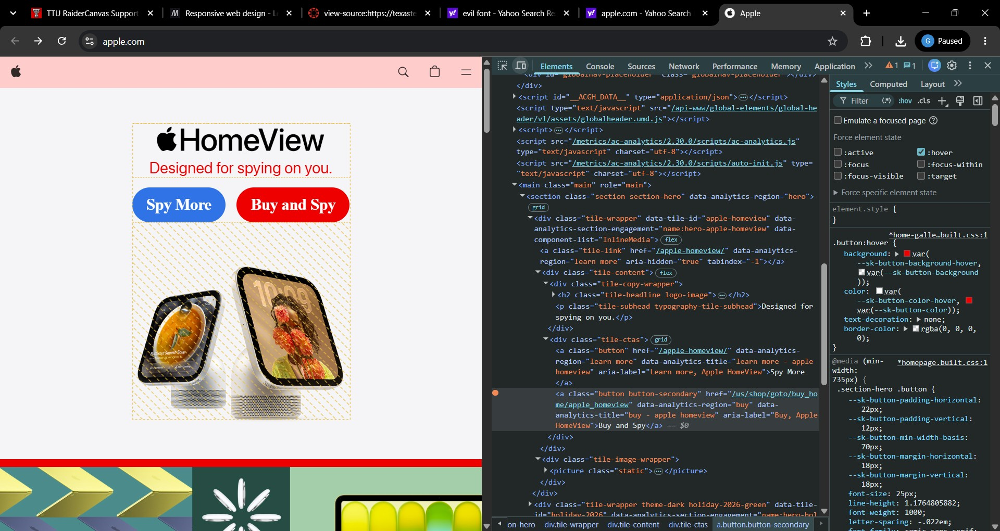

My Dev Tools Vandalism
I used browser developer tools to temporarily "vandalize" a website. Below is a screenshot showing my changes. These edits only appeared on my computer and did not affect the actual website.

What I "Vandalized"
Describe the changes you made to the website using the browser's developer tools. Some potential questions to consider:
- I edited the subtext underneath the new Apple HomeView. I changed it to "Designed for spying on you." I also changed the buttons to say "Spy More" and "Buy and Spy," respectively.
- I modified the text color and button colors to red.
- I tried to make the edits amusing by using the theory that tech companies spy on you through your hardware.
- I easily understood why my changes work, but I was trying to change the background color, and it did work, but the image over the background takes up the majority of the space.
- I chose to make the changes to make fun of Apple and their evergrowing products.
- I was able to understand the HTML and CSS code to make my changes. I learned that making most individual elements '.div' you can easily style and arrange content based on div and class instead of the overarching element.
- I have a much better understanding of how the dev tools can assist in creating and styling my own webpages. Particularly when I want to recreate a function or design and am not sure how to get there.